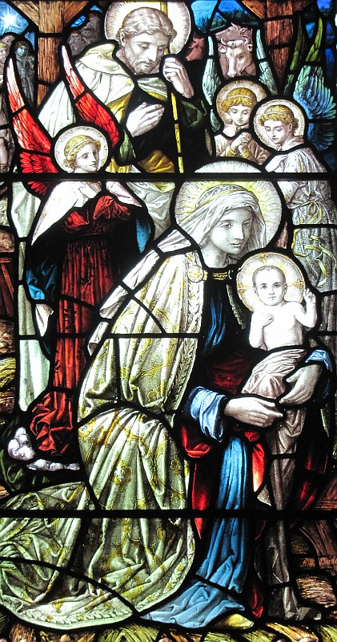

L'Êvangile sélon St.-Luc
Chapitre 2, Vèrsets 1 à 7

I' s'adonnit dans chu temps-là qu'un êdit fut publiée d'la part dé César Auguste pour faithe un récensement dé tout l'monde.
Chu récensement fut fait quand Quirinus 'tait gouvèrneux d'la Syrie.
Ch'est en tchi, tout l'monde s'en fûdrent pour être enregistrés, chatchun dans sa ville.
Et Joséph s'en fut dé Galilée en Judée, ch'est à dithe, dé la ville dé Nazareth à la ville dé David nommée Bethléhem, pa'ce qu'il 'tait d'la même fanmille et d'la même lîngne comme David, pour être enregistré auvec Marie, sa femme, qu'attendait un êfant.
Et quandi qu'i' 'taient là, ou vint prête à accouôchie.
Et ou mint au monde san fis preunmyi-né, et ou l'frottit, et lé mint dans un bèr, pa'ce qu'i' n'y avait pon d'run pour ieux dans l'hôtell'lie.
Chapitre 2, Vèrsets 1 à 7
Et à chu temps-là i' s'adonnit qué v'là tchi fut procliâmé d'la part dé César Audguste qu'tout l'monde fûssent enr'gîstrés - et ch't' enr'gîstrâtion-là 'tait pouor êt' faite duthant la bâle dé Quirinus coumme gouvèrneux d'la Sythie. Et un châtchun s'en fut êt' enr'gîstré dans sa ville dé siez ses gens. Épis Joseph, li étout, s'en fut hors d'Galilée, d'la ville dé Nazareth, jusqu'en Judée, à la ville dé Dâvi, tch'a nom Béthléhem, viyant qu'i' 'tait d'la maîson et d'la lîngnie d'Dâvi, à seule fîn d's'enr'gîstrer acanté sa fianchie Mathie tchi 'tait pouor porter naîssance. Et coumme i' 'taient là, i' s'adonnit qué l'heuthe lî vînt pouor donner naîssance à l'êfant, et d'même i' fut né, san fis preunmié-né, et ou l'enfliubit et l'couochit dans l'tro d'l'êtabl'ye; ch'est en tchi i' n'y'avait pon d'pliaiche pouor ieux dans la maîson.
Viyiz étout:
- La Bibl'ye
- La Bouonne Nouvelle s'lon Luc: 1
- La Bouonne Nouvelle s'lon Saint Luc, chapitre iun, vèrsets 1-4
- La Bouonne Nouvelle s'lon Luc, Chapitre 1, vèrsets v-xxv
- L'Êvangile sélon Saint Luc, chapitre iun, vèrsets 26-38
- L'Êvangile sélon St.-Luc: chapitre 1 versêts xxvi à xxxviii - eune aut' vèrsion
- L'Êvangile sélon Saint Luc, chapitre iun, vèrsets 26-38 - eune aut' vèrsion
- La Bouonne Nouvelle s'lon Luc, Chapitre 1, vèrsets 39-56
- La Bouonne Nouvelle s'lon Luc: 2
- L'Êvangile sélon St.-Luc, Chapitre deux, Vèrsets 1 à 7- eune aut' vèrsion
- L'Êvangile sélon Saint Luc, chapitre 2, vèrsets viii à xx
- L'Êvangile sélon St.-Luc, Chapitre deux, Vèrsets 8 à 20- eune aut' vèrsion
- L'Êvangile sélon St.-Luc: chapitre 2, versêts viii à xx - eune aut' vèrsion
- L'Êvangile sélon St.-Luc: Chapitre 2, Versêts 8 à 20 - eune aut' vèrsion
- La Bouonne Nouvelle s'lon Luc Chapitre 2, Vèrsets 21-24
- La Bouonne Nouvelle s'lon Luc, Chapitre 2, vèrsets 25-33
- La Bouonne Nouvelle s'lon Luc: 3
- La Bouonne Nouvelle s'lon Luc, Chapitre 3, vèrsets 23 à 38
- La Bouonne Nouvelle s'lon Luc: 4
- La Bouonne Nouvelle s'lon Luc: 5
- La Bouonne Nouvelle s'lon Luc: 6
- La Bouonne Nouvelle s'lon Luc: 7
- La Bouonne Nouvelle s'lon Luc, Chapitre 8
- La Bouonne Nouvelle s'lon Luc: 9
- La Bouonne Nouvelle s'lon Luc: 10
- Lé Bouôn Samathitain
- La Bouonne Nouvelle s'lon Luc: 11
- La Bouonne Nouvelle s'lon Luc: 12
- La Bouonne Nouvelle s'lon Luc: 13
- Luc: 14
- La Bouonne Nouvelle s'lon Luc, 15
- La Bouonne Nouvelle s'lon Luc, Chapitre 15, vèrsets viii-x
- L'Êfant Prodigue
- La Bouonne Nouvelle s'lon Luc: 16
- La Bouonne Nouvelle s'lon Luc: 17
- La Bouonne Nouvelle s'lon Luc: 18
- La Bouonne Nouvelle s'lon Luc, Chapitre 19
- La Bouonne Nouvelle s'lon Luc, chapitre 19, vêrsets 1-10
- L'Êvangile sélon Saint Luc, chapitre 19, vèrsets 42-44
- La Bouonne Nouvelle s'lon Luc: 20
- La Bouonne Nouvelle s'lon Luc, Chapitre 20, vèrsets 20-26
- La Bouonne Nouvelle s'lon Luc, Chapitre 21
- La Bouonne Nouvelle s'lon Luc: 22
- La Bouonne Nouvelle s'lon Luc, Chapitre 23
- La Bouonne Nouvelle s'lon Luc, Chapitre 24
- La Bouonne Nouvelle s'lon Saint Luc, chapitre 24, vèrsets 36-43